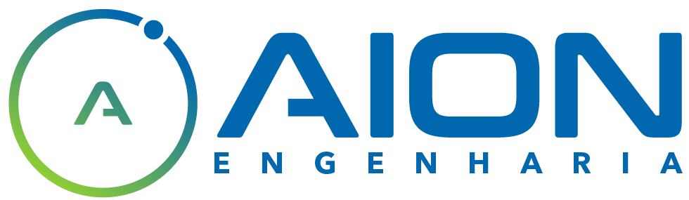
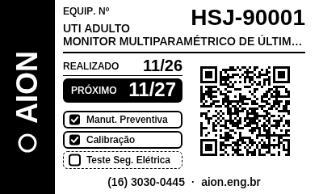

Filtre por setor e mês, marque equipamentos e imprima na Niimbot B1. OS fechadas do mês entram para reimpressão. Evidência sintética (TAG-2 aberta + TAG-3/TAG-10 fechadas, ordem natural).
Ordenação padrão: Tag natural crescente (TAG-2 antes de TAG-10). Setor vazio na lista = “Sem setor”.
| Tag | Equipamento | Setor | Situação | |
|---|---|---|---|---|
| TAG-2 | Bomba de Infusão | UTI Adulto | ABERTA | |
| TAG-3 | Desfibrilador | Sem setor | FECHADA | |
| TAG-10 | Monitor multiparamétrico… | Centro Cirúrgico Bloco B… | FECHADA |
Lista misturando aberta (TAG-2) e fechadas (TAG-3, TAG-10) em ordem natural crescente — sem agrupar por situação. Sem rolagem horizontal da página (ET6/ET9).
Prévia hi-DPI; setor sob o Tag; nome longo truncado; REALIZADO/PRÓXIMO/QR sem sobreposição.
